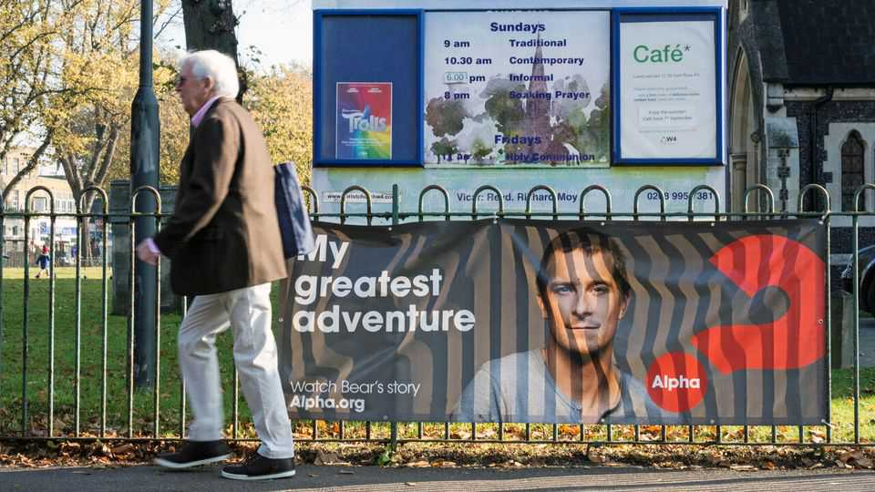
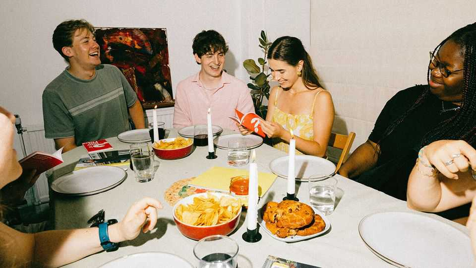

Britain | Dinner with Jesus

ON A RAINY night in London, 12 strangers gather in a vicar’s living room. He gives them drinks (they all have water, he has a lager) and a homemade meal. They make awkward small talk. After an icebreaker—“Which historical figure would you choose to be stuck in a lift with?”—the vicar presses play on a 25-minute video. It features swooping city shots and a topless Bear Grylls, a telegenic adventurer, on a desert island waving down a helicopter. “Ever feel that your life is missing something?” it asks. “Jesus is the answer.”
The Alpha course began as a spiritual recruitment tool for Holy Trinity Brompton (HTB), a trendy Anglican evangelical church in west London. Its success has been astonishing. Since its launch in 1977, more than 30m people have taken the course. In 2024 alone over 2m people across 146 countries did Alpha, its most successful year yet. Roughly a quarter of participants are in America, but its fastest-growing region is sub-Saharan Africa. The film series is available in 53 languages. It now offers a bespoke Chinese version with “culturally relevant content” (think Shanghai skyscrapers instead of London ones). No other religious course comes close to matching its reach.
The format is simple. Alpha typically runs for 11 weeks (other lengths are available). Participants are encouraged to ask questions, and no question is too stupid. There is, however, a hard 90-minute time limit on the meetings. Prayer is typically introduced in around week five, the Bible in week six. Later, during an away day, participants are invited to use their “spiritual gifts”, such as speaking in tongues or prophesying. The effect of this gentle, structured introduction to Christianity is what Andrew Walker, in his foreword to “Inside Alpha”, a book first published in 2009, describes as “spiritual nitroglycerine…in a safety bottle”.

What explains Alpha’s success? It is funded almost entirely by donations. Some of those donors have deep pockets. Ken Costa, the chair of Alpha International, the charity that runs the courses, is a banker; Sir Paul Marshall, a controversial media mogul, is another prominent supporter. They bring business savvy as well as money. Alpha runs a Bible app, two marriage courses and an annual leadership conference. Its online shop offers an impressive range of Alpha merchandise, from caps to insulated bottles and bunting.
As important is Alpha’s missionary zeal. Its stated vision is “the evangelisation of the nations, the revitalisation of the church and the transformation of society”. It aims to save as many souls as possible, from dissatisfied yuppies to hardened criminals. Indeed, Alpha runs courses in most of Britain’s prisons.
It is also unusually ecumenical. In 2024 a fifth of churches running Alpha were Catholic. In order to grow, Alpha eschews controversial topics: for example, in its courses there is no mention of infant baptism, Marian devotion or homosexuality. Yet its presence in nearly 50 countries, with local offices often staffed by Catholics, helps explain why HTB has opposed proposals within the Church of England to introduce blessings for gay couples.
Alpha is focused on one group above all: youth. More than a third of its courses are now designed specifically for under-25s. Its films frame the loneliness and mental-health struggles afflicting young people as symptoms of a deeper spiritual hunger. For the church, this focus is sorely needed. Despite talk of a “spiritual revival” in Britain, just 3% of 18- to 34-year-olds attended church at least once a month in 2024, according to the British Social Attitudes survey, down from 5% in 2017. In that respect, for all its success, Alpha is swimming against the tide. ■
For more expert analysis of the biggest stories in Britain, sign up to Blighty, our weekly subscriber-only newsletter.